Przetwarzanie równoległe i strumieniowe
Wykład 8
Dane sensoryczne, serwer danych, broker danych, biblioteki przetwarzania strumieniowego


Plan wykładu
przetwarzanie wsadowe a strumieniowe, wyzwania, zastosowania
czujniki, Bluetooth LE, odczyt i dekodowanie w Pythonie, problem skali
ETL, broker, procesor strumieni, analityka, przechowywanie
kolejka a publish/subscribe, gwarancje dostarczenia, backpressure
protokół IoT, partycjonowany log zdarzeń, usługi chmurowe
Flink, Spark, Kafka Streams, Storm, biblioteki Pythona
Co już znamy: potoki generatorów (wykład 2), Streamz (wykład 9) i asyncio (wykład o korutynach). Dziś zobaczymy, skąd biorą się dane strumieniowe i jak trafiają do programów, które je przetwarzają. Następne wykłady: Apache Flink i Apache Kafka.
Strumień danych (data stream)
Strumień to nieograniczony (unbounded) ciąg zdarzeń: dane napływają tak długo, jak działa źródło, i nie mają ustalonego końca.
- Każde zdarzenie (event) to mały rekord: klucz, wartość i znacznik czasu.
- Zdarzenia są niezmienne: dopisujemy nowe, nie poprawiamy starych (append-only).
- Przykłady: kliknięcie w link, odczyt czujnika, transakcja kartą, wpis w logu serwera.
{"key": "czujnik17", "ts": "2026-12-16T08:00:05Z",
"value": {"temp": 23.2, "wilg": 42}}
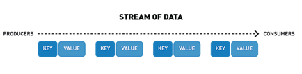

Generator z wykładu 2 to też strumień: dostarcza elementy jeden po drugim i może być nieskończony.
Przetwarzanie wsadowe a strumieniowe
Przetwarzanie wsadowe (batch processing): dane są gromadzone w paczki (np. z całego dnia) i przetwarzane okresowo. Wynik pojawia się po przetworzeniu całego wsadu.
Przetwarzanie strumieniowe (stream processing): każde zdarzenie jest przetwarzane zaraz po nadejściu, a wynik jest aktualizowany na bieżąco.
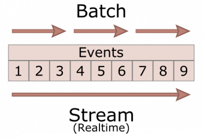
To ta sama różnica co między listą a generatorem z wykładu 2: lista czeka na wszystkie elementy, generator oddaje je po jednym.
Wsad czy strumień? (batch vs stream)
| Wsadowo | Strumieniowo | |
|---|---|---|
| Dane | ograniczone (bounded), znany koniec | nieograniczone (unbounded) |
| Opóźnienie | minuty do godzin | milisekundy do sekund |
| Wynik | ostateczny, po przetworzeniu całości | ciągle aktualizowany |
| Przykład | raport dzienny, trening modelu ML | alarm, wykrywanie oszustw, dashboard |
| Narzędzia | Spark, SQL, MapReduce (wykład 2) | Flink, Kafka Streams, Spark Structured Streaming |
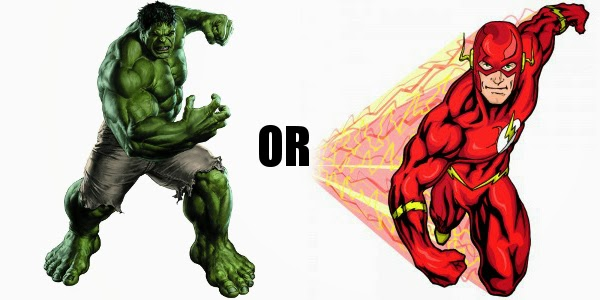
siła (wsad) czy szybkość (strumień)?
Dawniej mówiło się, że strumieniowo da się policzyć tylko proste rzeczy (średnią w oknie, alarm). Dziś silniki strumieniowe przechowują stan, łączą strumienie, wykrywają wzorce i uruchamiają modele ML na bieżąco. Wsad wciąż wygrywa przy analizie całej historii i trenowaniu modeli.
Wsad a strumień: symulacja
Czerwone kropki to odczyty powyżej 30 °C, czyli alarmy. Zmień okres wsadu i porównaj opóźnienia.
Silnik przetwarzania strumieni
Silnik strumieniowy przyjmuje wiele strumieni wejściowych i wykonuje na nich wiele operacji równolegle.
Aplikacje strumieniowe opierają się na dwóch filarach:
- przechowywaniu zdarzeń (trwały, uporządkowany log),
- przetwarzaniu zdarzeń (filtrowanie, łączenie, agregacja).
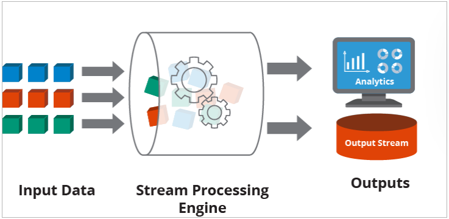
- Przetwarzanie musi być odporne na awarie i utratę danych oraz (zwykle) zachowywać kolejność zdarzeń, przynajmniej w obrębie jednego klucza.
- Pojedyncze wiadomości są małe (bajty do kilobajtów), ale jest ich bardzo dużo: tysiące do milionów na sekundę.
Wyzwania przetwarzania strumieniowego
- Przepustowość: dane rzędu gigabitów na sekundę.
- Skalowalność: obciążenie się zmienia (szczyty w dzień, cisza w nocy).
- Niskie opóźnienie: odebrać, przetworzyć i udostępnić wynik dalej w ułamku sekundy.
- Kolejność i czas: zdarzenia przychodzą spóźnione i nie po kolei. Liczy się czas zdarzenia (event time), a nie czas nadejścia.
- Stan i awarie: stan (np. suma w oknie) trzeba odtworzyć po awarii bez gubienia i dublowania danych.
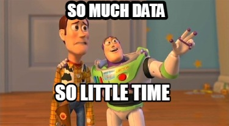
Zastosowania i przypadki użycia
Zastosowania
- Monitorowanie dowolnej liczby strumieni zdarzeń w narzędziach analitycznych.
- Wykrywanie i analiza wzorców zachowań.
- Reagowanie na zdarzenia w momencie ich wystąpienia.
- Automatyczne działania bez udziału człowieka.
- Przewidywanie zdarzeń.
Przypadki użycia
- Clickstream analytics: śledzenie zachowania użytkowników na stronach WWW.
- IoT: analiza danych z czujników w czasie rzeczywistym.
- Cyberbezpieczeństwo: wykrywanie ataków DDoS.
- Fraud detection: podejrzane transakcje bankowe.
- Analiza logów: wykrywanie anomalii w systemach.
- Logistyka: śledzenie pojazdów i przesyłek (GPS).
Sprawdź się: wsad czy strumień?
Miesięczny raport zużycia wody w szklarni.
Wsad: wynik potrzebny raz w miesiącu, liczy się kompletność danych, a nie opóźnienie.
Blokada karty po podejrzanej transakcji.
Strumień: decyzja musi zapaść w ciągu sekund, zanim oszust zrobi kolejne zakupy.
Włączenie wentylacji, gdy temperatura przekroczy 30 °C.
Strumień: sterowanie w pętli zwrotnej wymaga reakcji na bieżący odczyt.
Trening modelu prognozy plonów na danych z 5 lat.
Wsad: model uczymy na całej historii. Gotowy model można potem uruchamiać na strumieniu.
Dane sensoryczne: przykład ze szklarni
Czujniki w uprawie pomidorów na macie z wełny mineralnej (Grodan) mierzą warunki w podłożu w czasie rzeczywistym.
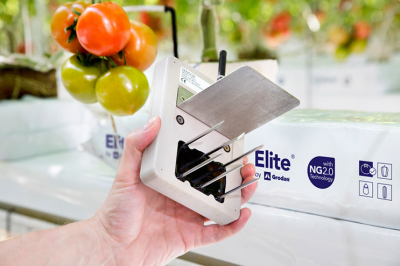
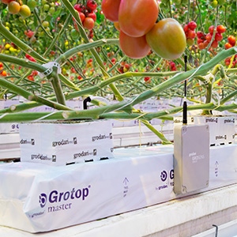
Źródło zdjęć: https://www.grodan.com/
Sensor profesjonalny i domowy
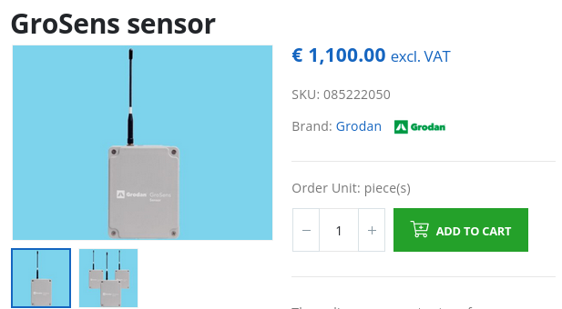
Profesjonalny: mierzy zawartość wody w podłożu (WC), temperaturę i przewodność elektryczną (EC), czyli zasolenie pożywki.
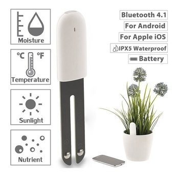
Domowy (Xiaomi Mi Flora): wilgotność, temperatura, natężenie światła, żyzność (EC).
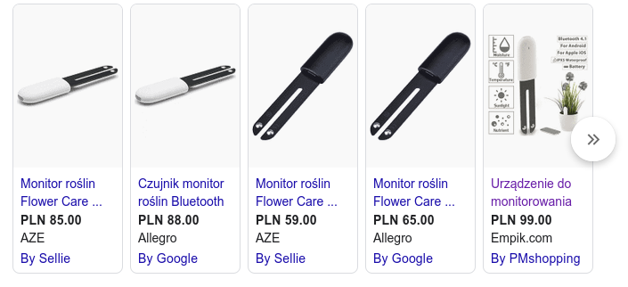
Około 1100 € wobec 60-100 zł (ceny z 2023 r.). Za różnicę płacimy za dokładność, kalibrację, trwałość, zasięg radiowy i integrację z systemem sterowania szklarnią.
Budowa sensora i łączność
- Sensor to proste urządzenie zasilane baterią, które służy wyłącznie do pomiarów. Większość czasu „śpi”, a odczyt wysyła co kilka minut.
- Komunikuje się bezprzewodowo, najczęściej przez Bluetooth Low Energy (BLE). Na duże odległości: LoRaWAN, NB-IoT.
- W realnym wdrożeniu sensor zawsze rozmawia z odbiornikiem (agregatorem, bramką), który przesyła dane dalej do serwera lub chmury.
Cel użycia sensorów
Chcemy zbudować system, który na podstawie odczytów:
| Cel | Przykład | Operacja na strumieniu |
|---|---|---|
| Alarmowanie | temperatura powyżej 30 °C, czujnik milczy od 15 minut | filtr (bezstanowy), timer wykrywający brak danych |
| Sterowanie | utrzymanie poziomu nawodnienia, strategie nawadniania i nawożenia | pętla sterowania z pamięcią stanu (stateful) |
| Raporty | dzienne nasłonecznienie, minimalna i maksymalna temperatura | agregacja w oknach czasowych |
Każdy z tych celów to inny rodzaj przetwarzania strumieniowego. Filtry i okna czasowe zobaczymy w Apache Flink.
Problem skali
- Tysiące sensorów wysyłają dane do serwera.
- Dane pochodzą z różnych stref czasowych: zapisujemy czas zdarzenia w UTC.
- Różne ustawienia i alerty zależą od typu uprawy, klienta itp.: strumień trzeba wzbogacić o konfigurację (złączenie z tabelą).
Policzmy: 5000 czujników × 4 wielkości × 1 odczyt na minutę = 20 000 wiadomości na minutę, czyli ok. 333 na sekundę i 28,8 mln na dobę.
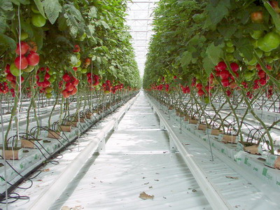
Odczyt z sensora w Pythonie (BLE)
import asyncio
from bleak import BleakClient
ADRES = "C4:7C:8D:6A:3E:91" # MAC czujnika (macOS: UUID)
TRYB = "00001a00-0000-1000-8000-00805f9b34fb"
DANE = "00001a01-0000-1000-8000-00805f9b34fb"
BATERIA = "00001a02-0000-1000-8000-00805f9b34fb"
async def odczyt(adres):
async with BleakClient(adres, timeout=20) as czujnik:
await czujnik.write_gatt_char(TRYB, b"\xa0\x1f", response=True)
dane = await czujnik.read_gatt_char(DANE)
info = await czujnik.read_gatt_char(BATERIA)
return dekoduj(dane) | {"bateria": info[0],
"firmware": info[2:].decode()}
print(asyncio.run(odczyt(ADRES))) # dekoduj(): następny slajd
- bleak to wieloplatformowa biblioteka BLE oparta na
asyncio(wykład o korutynach). - Protokół Mi Flora: zapis bajtów
A0 1Fdo charakterystyki trybu, potem odczyt 16 bajtów z bieżącymi pomiarami. - Charakterystyki GATT identyfikujemy po UUID.
Oryginalny przykład korzystał z biblioteki miflora. Jej ostatnie wydanie to 0.7.2, a backendy bluepy/gatttool nie są już rozwijane. Dziś lepiej użyć bleak.
Dekodowanie bajtów: moduł struct
import struct
def dekoduj(raw: bytes) -> dict:
# < little-endian | h: int16 temp*10 | x: pomiń bajt
# I: uint32 lux | B: uint8 wilgotność % | H: uint16 EC
temp, lux, wilg, ec = struct.unpack_from("<hxIBH", raw)
return {"temp": temp / 10, "lux": lux, "wilg": wilg, "ec": ec}
raw = bytes.fromhex("e800 00 c8090000 2a 5e01 023c00fb349b")
print(len(raw), raw.hex(" "))
print(dekoduj(raw))
16 e8 00 00 c8 09 00 00 2a 5e 01 02 3c 00 fb 34 9b
{'temp': 23.2, 'lux': 2504, 'wilg': 42, 'ec': 350}
Temperatura jest liczbą ze znakiem (h), bo bywa ujemna. 0x00e8 = 232, czyli 23,2 °C.
Czujnik zwrócił bajty:
2c 01 00 10 27 00 00 37 c8 00 ...
temp = °C lux = wilg = %
Little-endian: najmłodszy bajt pierwszy. 2c 01 → 0x012c = 300 → 30,0 °C. 10 27 00 00 → 0x2710 = 10 000 lx. 37 → 55 %.
Od sensora do raportu: proces
- Alarmy i sterowanie nie czekają na zapis do bazy: działają bezpośrednio na strumieniu.
- Surowe dane archiwizujemy osobno, aby móc je później przeliczyć wsadowo, np. po poprawieniu błędu w kodzie.
ETL (extract, transform, load)
ETL (wyodrębnij, przekształć, załaduj) to proces integracji danych: łączy dane z wielu źródeł w jeden spójny zbiór i zapisuje go w hurtowni danych lub innym systemie docelowym.
- Extract: pobranie i weryfikacja danych ze źródeł.
- Transform: czyszczenie, ujednolicenie jednostek i formatów, wzbogacanie.
- Load: zapis do repozytorium danych.
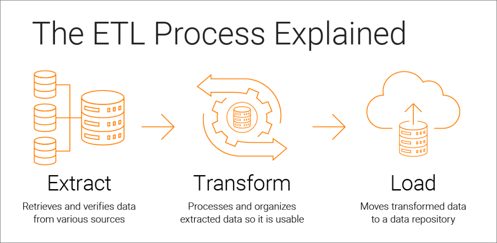
ELT: najpierw ładujemy surowe dane (np. do data lake), a przekształcamy je później w docelowej bazie. Streaming ETL: te same trzy kroki wykonywane w sposób ciągły dla każdego zdarzenia.
ETL w Pythonie: potok generatorów
import csv, io, sqlite3
from datetime import datetime, timezone
SUROWE = io.StringIO("""czujnik;czas;temp_F
s1;2026-12-16T08:00+01:00;75.2
s2;2026-12-16T02:00-05:00;81.5
s3;2026-12-16T08:00+01:00;ERR
s1;2026-12-16T08:05+01:00;76.1
""")
def extract(plik): # E: wiersz po wierszu
yield from csv.DictReader(plik, delimiter=";")
def transform(wiersze): # T: walidacja, UTC, °F -> °C
for w in wiersze:
try:
f = float(w["temp_F"])
except ValueError:
continue # odrzucamy błędny odczyt
czas = datetime.fromisoformat(w["czas"]).astimezone(timezone.utc)
yield w["czujnik"], czas.isoformat(), round((f - 32) / 1.8, 1)
def load(rekordy, db): # L: zapis do bazy
db.executemany("INSERT INTO odczyty VALUES (?, ?, ?)", rekordy)
db = sqlite3.connect(":memory:")
db.execute("CREATE TABLE odczyty (czujnik, czas_utc, temp_c)")
load(transform(extract(SUROWE)), db)
print(*db.execute("SELECT * FROM odczyty ORDER BY czas_utc"), sep="\n")
('s1', '2026-12-16T07:00:00+00:00', 24.0)
('s2', '2026-12-16T07:00:00+00:00', 27.5)
('s1', '2026-12-16T07:05:00+00:00', 24.5)
- Potok generatorów z wykładu 2: w pamięci jest zawsze jeden wiersz.
- Odczyty
s1o 8:00 w Polsce is2o 2:00 w Nowym Jorku to ten sam moment. Bez UTC trudno to zauważyć. - Błędny odczyt
ERRodpada w kroku T.
Architektura strumieniowa
Architektura przetwarzania strumieniowego (streaming data architecture) to zestaw komponentów, które przyjmują i przetwarzają duże ilości danych napływających jednocześnie z wielu źródeł.
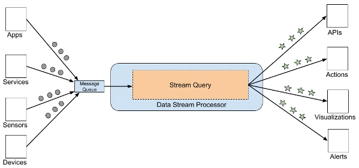
Dzięki niej możemy zarządzać danymi strumieniowymi, monitorować je i analizować w czasie rzeczywistym.
Cztery elementy architektury
| Element | Rola | Przykłady (2026) |
|---|---|---|
| Broker wiadomości (message broker) | przyjmuje zdarzenia od producentów, buforuje je i przekazuje konsumentom | Apache Kafka, brokery MQTT (Mosquitto, EMQX), RabbitMQ, Amazon Kinesis Data Streams, Google Cloud Pub/Sub, Azure Event Hubs |
| Procesor strumieni (stream processing framework, streaming ETL) | filtruje, łączy, agreguje i wzbogaca zdarzenia | Apache Flink, Spark Structured Streaming, Kafka Streams, Google Dataflow (Apache Beam) |
| Analityka (silnik zapytań, BI) | zapytania SQL, dashboardy, raporty | Amazon Athena, BigQuery, ClickHouse, Apache Druid, Grafana, Power BI |
| Magazyn danych strumieniowych (streaming data storage) | trwałe i tanie przechowywanie historii zdarzeń | data lake (S3 + Parquet, Apache Iceberg), bazy szeregów czasowych (InfluxDB, TimescaleDB) |
Kolejne slajdy omawiają te elementy po kolei, a brokery (MQTT, Kafka, Kinesis) szczegółowo.
Broker wiadomości (message broker)
Broker pobiera dane ze źródła (producenta), opcjonalnie tłumaczy je na standardowy format wiadomości i przesyła dalej.
Inne komponenty (konsumenci) nasłuchują i wykorzystują komunikaty przekazywane przez brokera.

- Rozprzęga (decoupling) systemy: producent nie musi znać konsumentów ani czekać, aż będą gotowi.
- Buforuje chwilowe szczyty: to problem producenta i konsumenta z wykładu o klasycznych problemach synchronizacji, tylko w skali sieci.
Kolejka czy publish/subscribe?
Wybierz tryb i wyślij kilka wiadomości.
Gwarancje dostarczenia (delivery semantics)
| Semantyka | Jak działa | Ryzyko |
|---|---|---|
| at-most-once (najwyżej raz) | wyślij i zapomnij, bez potwierdzeń | wiadomość może zginąć |
| at-least-once (co najmniej raz) | ponawiaj, aż odbiorca potwierdzi | duplikaty po ponowieniu |
| exactly-once (dokładnie raz) | at-least-once + deduplikacja lub transakcje (Kafka, Flink) | wyższy koszt i złożoność |
Konsument przetworzył wiadomość, zapisał wynik do bazy i padł, zanim potwierdził odbiór (commit offsetu). Po restarcie przetworzy ją jeszcze raz. Jaka to semantyka?
At-least-once: nic nie zginie, ale mogą pojawić się duplikaty. Dlatego operacje warto projektować jako idempotentne: zapis „temperatura czujnika 17 o 8:00 = 23,2” można powtórzyć bez szkody, a „zwiększ licznik o 1” już nie.
Push, pull i przeciwciśnienie (backpressure)
Co się stanie, gdy producent wysyła szybciej, niż konsument nadąża przetwarzać?
Push (MQTT, RabbitMQ): broker sam wysyła wiadomości do konsumenta. Pull (Kafka, Kinesis): konsument pobiera je we własnym tempie, a nadmiar czeka w logu na dysku (rośnie consumer lag).
Generacje brokerów
- Message Oriented Middleware (MOM): kolejki, routing, wiadomość znika po potwierdzeniu. RabbitMQ (4.x, od wersji 3.9 także trwałe Streams), Apache ActiveMQ Classic i Apache Artemis (od XI 2025 osobny projekt Apache).
- Platformy logów zdarzeń (event streaming): bardzo wydajne, przechowują historię, którą można odczytać ponownie. Apache Kafka, Redpanda, Apache Pulsar.
- Usługi chmurowe: Amazon Kinesis Data Streams, Google Cloud Pub/Sub, Azure Event Hubs (zgodny z protokołem Kafki), Azure IoT Hub dla urządzeń IoT.
- Brokery IoT (protokół MQTT): Eclipse Mosquitto, EMQX, HiveMQ.
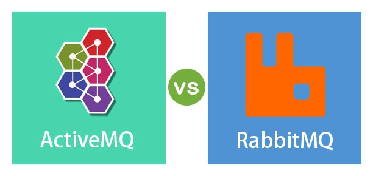
Procesor strumieni (stream processor)
- Procesor strumieni (stream processing framework, streaming ETL): strumienie z brokera trzeba zagregować, przekształcić i ustrukturyzować, zanim będzie można je analizować narzędziami opartymi na SQL.
- Robią to procesory strumieni: pobierają zdarzenia z kolejek, a następnie łączą, przekształcają lub agregują dane.
- Wynikiem może być wywołanie API, akcja, wizualizacja, alert albo nowy strumień zapisany z powrotem do brokera.
To ten sam model co potok generatorów z wykładu 2 i Streamz z wykładu 9. Silniki rozproszone dodają równoległość na wielu maszynach, stan odporny na awarie i obsługę czasu zdarzeń.
Przetwarzanie strumieni w chmurze
| Dostawca | Usługi do przetwarzania strumieni (stan na 2026) |
|---|---|
| open source | Apache Flink, Spark Structured Streaming, Kafka Streams, Apache Beam. Apache Storm wciąż jest rozwijany, ale stracił popularność. |
| AWS | Amazon Managed Service for Apache Flink (dawniej Kinesis Data Analytics), Spark na Amazon EMR. Kinesis Data Analytics for SQL wyłączono w styczniu 2026 r. |
| Microsoft Azure | Azure Stream Analytics, Microsoft Fabric Real-Time Intelligence, Spark w Azure Databricks i HDInsight. Storm nie jest już dostępny w HDInsight. |
| Google Cloud | Dataflow (Apache Beam), Dataproc (Spark, Flink), Managed Service for Apache Kafka |
Nazwy i oferta usług chmurowych zmieniają się co rok. Warto znać silniki open source (Flink, Spark, Beam), bo na nich opiera się większość usług zarządzanych.
Analityka i BI
- Po przetworzeniu przez procesor dane można dalej analizować: zapytaniami SQL, w bazach NoSQL, kolejnymi transformacjami.
- Zapytania i hurtownie: Amazon Athena, Amazon Redshift, Google BigQuery.
- Analityka czasu rzeczywistego: ClickHouse, Apache Druid, Apache Pinot, Elasticsearch / OpenSearch.
- Bazy NoSQL: Cassandra (duży strumień zapisów).
- Szeregi czasowe (dane z czujników): InfluxDB, TimescaleDB, wizualizacja w Grafanie.
- BI i raporty: Power BI, Tableau, Sisense.
Przechowywanie danych: data lake
- Data lake (jezioro danych) to najtańsza i najbardziej elastyczna opcja przechowywania zdarzeń: pliki w magazynie obiektowym (S3, Azure Blob, GCS). Poprawna konfiguracja i utrzymanie są jednak trudne.
- Schema-on-read: strukturę nadajemy danym dopiero przy odczycie. W hurtowni (schema-on-write) schemat sprawdzany jest przy zapisie.
- Dziś dane w jeziorze zapisuje się zwykle w kolumnowym formacie Parquet, a tabele opisują formaty Apache Iceberg lub Delta Lake (tzw. lakehouse: transakcje i SQL na plikach).
- Wszyscy dostawcy chmury oferują odpowiednie komponenty.
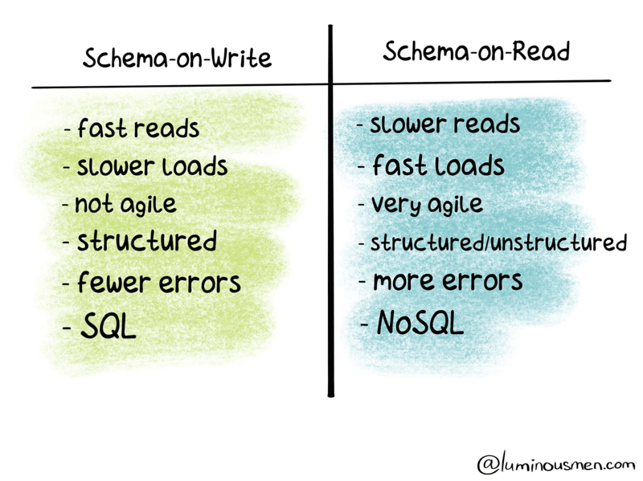
Architektura Lambda i Kappa
- Lambda: ścieżka wsadowa daje dokładne wyniki z opóźnieniem, strumieniowa szybkie przybliżenie. Wadą jest utrzymywanie tej samej logiki w dwóch systemach.
- Kappa: wszystko jest strumieniem. Aby przeliczyć historię, odtwarzamy log zdarzeń od początku tym samym kodem. Wymaga brokera, który przechowuje historię (Kafka).
Sprawdź się
Które z poniższych to brokery wiadomości? (zaznacz wszystkie)
Flink to procesor strumieni, Grafana służy do wizualizacji, a InfluxDB to baza szeregów czasowych (magazyn).
Który element architektury liczy średnią temperaturę każdego czujnika w oknach 1-minutowych?
Agregacja w oknie to zadanie procesora strumieni (Flink, Kafka Streams, Quix Streams). Broker tylko przechowuje i przekazuje zdarzenia.
MQTT: protokół dla IoT
- MQTT to lekki protokół publish/subscribe działający nad TCP, standard OASIS (wersje 3.1.1 i 5.0). Nagłówek wiadomości ma zaledwie 2 bajty, więc protokół nadaje się do słabych urządzeń i niestabilnych łączy.
- Klienci publikują wiadomości w tematach (topics), np.
szklarnia/A/czujnik17/temp, i subskrybują tematy. Broker przekazuje każdą wiadomość wszystkim subskrybentom tematu. - Brokery: Eclipse Mosquitto, EMQX, HiveMQ, a także RabbitMQ (wtyczka MQTT) oraz Azure IoT Hub i AWS IoT Core.
- Typowo: MQTT od urządzeń do brokera, a dalej most (bridge, Kafka Connect) do Kafki i procesora strumieni.
Tematy MQTT i symbole wieloznaczne
- Temat to ścieżka z poziomami oddzielonymi
/. Tematów nie trzeba wcześniej tworzyć. +pasuje do jednego poziomu.#pasuje do dowolnej liczby poziomów (także zera). Musi stać na końcu filtra.- Tematy zaczynające się od
$(statystyki brokera) nie pasują do filtrów zaczynających się od+lub#.
Ćwiczenie: subskrypcje MQTT
Tematy mają postać szklarnia/<hala>/<czujnik>/<wielkość>. Podaj filtry subskrypcji:
# 1. wszystkie wielkości z hali A client.subscribe("") # 2. temperatura ze wszystkich czujników we wszystkich halach client.subscribe("") # 3. wszystko z czujnika 17 w dowolnej hali client.subscribe("")
Filtr szklarnia/#/temp jest niepoprawny, bo # musi być ostatni. Filtr 1 można zapisać też jako szklarnia/A/+/+, jeśli wszystkie tematy mają dokładnie 4 poziomy.
MQTT: QoS, retained, Last Will
| Mechanizm | Znaczenie |
|---|---|
| QoS 0 | najwyżej raz (at-most-once): wyślij i zapomnij |
| QoS 1 | co najmniej raz (at-least-once): potwierdzenie PUBACK, możliwe duplikaty |
| QoS 2 | dokładnie raz (exactly-once): czteroetapowe uzgodnienie, najwolniejsze |
| retained | broker pamięta ostatnią wiadomość w temacie i od razu wysyła ją nowym subskrybentom (np. aktualny stan) |
| Last Will (LWT) | wiadomość, którą broker opublikuje w imieniu klienta, gdy ten rozłączy się nieoczekiwanie (np. offline) |
| sesja trwała | broker przechowuje subskrypcje i wiadomości QoS 1/2 dla klienta, który chwilowo jest offline |
Czujnik wysyła temperaturę co 10 s i strata pojedynczego odczytu nie jest problemem. Jaki QoS wybrać?
QoS 0: najmniejszy narzut i najmniejsze zużycie baterii. Za 10 s przyjdzie nowy odczyt. QoS 1 lub 2 wybieramy dla komend (np. „zamknij zawór”) i zdarzeń, których nie wolno zgubić.
MQTT w Pythonie: publikacja (paho-mqtt 2.x)
import json, random, time
from datetime import datetime, timezone
import paho.mqtt.client as mqtt
SENSOR = "czujnik17"
TOPIC = f"szklarnia/A/{SENSOR}"
client = mqtt.Client(mqtt.CallbackAPIVersion.VERSION2, client_id=SENSOR)
client.will_set(f"{TOPIC}/status", "offline", qos=1, retain=True) # LWT
client.connect("localhost", 1883)
client.loop_start() # wątek sieciowy w tle
client.publish(f"{TOPIC}/status", "online", qos=1, retain=True)
for _ in range(3):
teraz = datetime.now(timezone.utc).isoformat(timespec="seconds")
odczyt = {"ts": teraz, "temp": round(random.gauss(27, 3), 1),
"wilg": random.randint(30, 60)}
info = client.publish(f"{TOPIC}/odczyt", json.dumps(odczyt), qos=1)
info.wait_for_publish() # QoS 1: czekamy na PUBACK
print("wysłano:", odczyt["ts"], odczyt["temp"])
time.sleep(1)
client.loop_stop()
client.disconnect()
wysłano: 2026-10-10T22:52:48+00:00 30.2 wysłano: 2026-10-10T22:52:49+00:00 30.1 wysłano: 2026-10-10T22:52:50+00:00 23.2
paho-mqtt 2.0 (2024) zmieniło API: pierwszym argumentem Client jest wersja API callbacków. Kod z tutoriali dla 1.x (mqtt.Client("id")) zgłasza dziś błąd.
loop_start()uruchamia osobny wątek obsługi sieci (wykład o wątkach).- Last Will: gdy czujnik zniknie bez
disconnect(), broker sam opublikujeoffline.
MQTT w Pythonie: subskrypcja
import json
import paho.mqtt.client as mqtt
def on_connect(client, userdata, flags, reason_code, properties):
print("połączono:", reason_code)
client.subscribe("szklarnia/+/+/odczyt", qos=1)
def on_message(client, userdata, msg):
odczyt = json.loads(msg.payload)
alarm = " <- ALARM" if odczyt["temp"] > 30 else ""
print(f"{msg.topic}: {odczyt['temp']} °C{alarm}")
client = mqtt.Client(mqtt.CallbackAPIVersion.VERSION2)
client.on_connect = on_connect
client.on_message = on_message
client.connect("localhost", 1883)
client.loop_forever() # pętla sieciowa w tym wątku
połączono: Success szklarnia/A/czujnik17/odczyt: 30.2 °C <- ALARM szklarnia/A/czujnik17/odczyt: 30.1 °C <- ALARM szklarnia/A/czujnik17/odczyt: 23.2 °C
- Subskrybujemy w
on_connect, więc po automatycznym ponownym połączeniu subskrypcja zostanie odnowiona. - Callbacki działają w wątku sieciowym: długie przetwarzanie w
on_messageblokuje odbiór kolejnych wiadomości. Cięższą pracę przekazujemy do kolejki i puli wątków (wykład o executorach). - To już jest prosty procesor strumienia: filtr
temp > 30na każdym zdarzeniu.
Amazon Kinesis Data Streams

Zarządzana usługa AWS, która nieprzerwanie przyjmuje gigabajty danych na sekundę z setek tysięcy źródeł. Strumień dzieli się na shardy (odpowiednik partycji Kafki).
- łatwa konfiguracja, brak serwerów do utrzymania, tryb on-demand sam się skaluje
- integracja z AWS: Lambda, Amazon Data Firehose, Managed Service for Apache Flink
- tylko w AWS (vendor lock-in)
- opłata za godzinę pracy sharda (tryb provisioned) albo za ilość danych (on-demand)
- limity na shard (1 MB/s zapisu, 2 MB/s odczytu), domyślna retencja 24 h (maks. 365 dni)
Apache Kafka
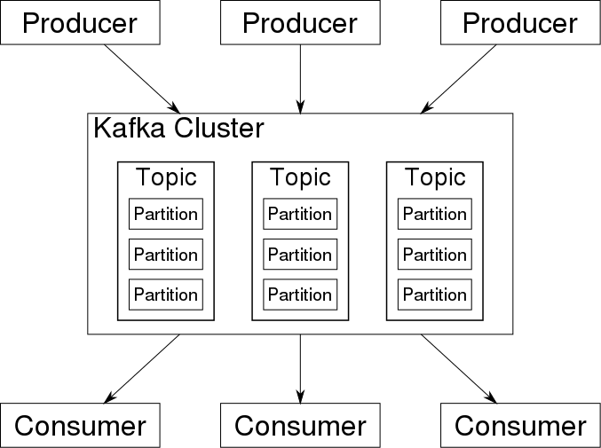
Apache Kafka to otwarta, rozproszona platforma strumieniowania zdarzeń dla wydajnych potoków danych, analityki strumieniowej, integracji danych i aplikacji krytycznych.
- Powstała w LinkedIn jako system kolejkowania wiadomości. W 2011 r. jej kod został otwarty i przekazany do Apache Software Foundation.
- Kafka 4.0 (2025) całkowicie usunęła ZooKeepera: metadane klastra zarządza wbudowany protokół KRaft. W 2026 r. aktualna jest gałąź 4.x.
- Szczegóły: wykład „Kafka, Kafka Streams, connectory”.
Klaster Kafki
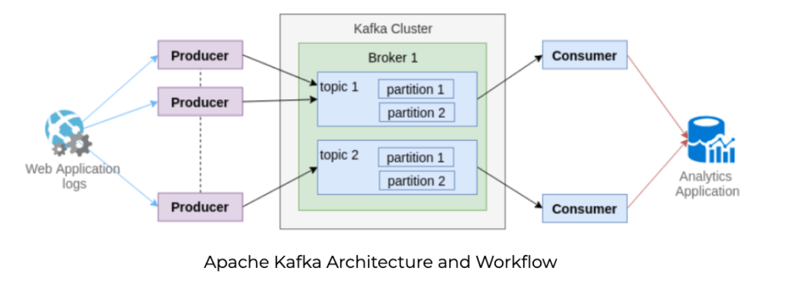
- Kafka działa jako klaster w środowisku rozproszonym, które może obejmować wiele centrów danych.
- Klaster składa się z wielu brokerów (węzłów). Część węzłów pełni rolę kontrolerów KRaft, które przechowują metadane klastra i wybierają liderów partycji.
Temat, partycja, offset
- Temat (topic) przechowuje strumień rekordów jako uporządkowaną, niezmienną sekwencję podzieloną na partycje. Każdy broker przechowuje część partycji.
- Rekordy z tym samym kluczem trafiają do tej samej partycji. Kolejność jest gwarantowana tylko w obrębie partycji.
- Offset to numer rekordu w partycji. Rekord nie znika po odczycie: jest usuwany dopiero po czasie retencji (domyślnie 7 dni) albo nigdy (log compaction zostawia ostatnią wartość dla klucza).
- Partycje są replikowane: lider przyjmuje zapisy, a repliki na innych brokerach przejmują jego rolę po awarii.
Producenci i konsumenci
- Aplikacje wysyłają dane do partycji przez producentów, a inne aplikacje odczytują je i przetwarzają przez konsumentów. Wielu producentów i konsumentów może działać jednocześnie.
- Kafka używa modelu pull: konsument sam pobiera partie wiadomości od zapamiętanego offsetu, we własnym tempie.
- Dwóch konsumentów czytających tę samą partycję dostanie dane w tej samej kolejności: wszyscy niezależni konsumenci widzą tę samą „rzeczywistość”.
- Konsument może cofnąć offset i odtworzyć historię, np. po poprawieniu błędu w kodzie (architektura Kappa).
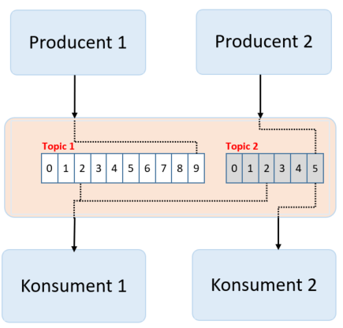
Grupy konsumentów (consumer groups)
odczyty ma 4 partycje
Temat ma 3 partycje, a w grupie uruchomiliśmy 5 konsumentów. Ilu z nich będzie otrzymywać wiadomości?
W jednej grupie partycję czyta dokładnie jeden konsument, więc maksymalna równoległość grupy to liczba partycji. Dwóch konsumentów będzie bezczynnych (czekają w rezerwie na awarię innych). Od Kafki 4.2 alternatywą są share groups (kolejki w Kafce, KIP-932), w których wielu konsumentów może czytać tę samą partycję.
Kafka w Pythonie: producent
import json, random
from confluent_kafka import Producer
p = Producer({"bootstrap.servers": "localhost:9092", "acks": "all"})
def raport(err, msg): # wywoływane po potwierdzeniu
if err:
print("błąd:", err)
else:
print(f"{msg.key().decode()} -> partycja {msg.partition()}, "
f"offset {msg.offset()}")
for i in range(6):
czujnik = f"czujnik{i % 3}"
odczyt = {"czujnik": czujnik, "temp": round(random.gauss(25, 3), 1)}
p.produce("odczyty", key=czujnik, value=json.dumps(odczyt), callback=raport)
p.flush() # czekamy na wszystkie potwierdzenia
czujnik1 -> partycja 2, offset 0 czujnik2 -> partycja 2, offset 1 czujnik1 -> partycja 2, offset 2 czujnik2 -> partycja 2, offset 3 czujnik0 -> partycja 1, offset 0 czujnik0 -> partycja 1, offset 1
confluent-kafkato oficjalny klient Pythona oparty na librdkafka.produce()jest asynchroniczne: wiadomości trafiają do bufora i są wysyłane partiami.- Ten sam klucz → ta sama partycja. Temat miał 3 partycje: partycja 0 nie dostała żadnego klucza.
acks=all: zapis potwierdzają wszystkie repliki.
Kafka w Pythonie: konsument
import json
from confluent_kafka import Consumer
c = Consumer({"bootstrap.servers": "localhost:9092",
"group.id": "alarmy", # grupa konsumentów
"auto.offset.reset": "earliest"}) # nowa grupa: od początku
c.subscribe(["odczyty"])
try:
while True:
msg = c.poll(1.0) # model pull
if msg is None:
continue
if msg.error():
print(msg.error())
continue
o = json.loads(msg.value())
print(f"p{msg.partition()}@{msg.offset()}", o["czujnik"], o["temp"])
finally:
c.close() # commit offsetów, wyjście z grupy
p2@0 czujnik1 20.7 p2@1 czujnik2 23.0 p2@2 czujnik1 25.9 p2@3 czujnik2 24.6 p1@0 czujnik0 26.6 p1@1 czujnik0 28.0
- Kolejność jest zachowana w każdej partycji, ale nie między partycjami.
- Offsety są domyślnie zatwierdzane automatycznie co 5 s (at-least-once).
- Drugie uruchomienie z tym samym
group.idnic nie wypisze: grupa zaczyna od zapisanego offsetu.
Dlaczego Kafka jest szybka?
- Zapis sekwencyjny: partycja to log, do którego tylko dopisujemy na końcu. Na dysku jest podzielony na pliki segmentów, a stare segmenty usuwa się w całości.
- Pamięć podręczna systemu (page cache): Kafka nie trzyma danych we własnej pamięci, korzysta z cache systemu operacyjnego. Przy odczycie jednego rekordu system z wyprzedzeniem wczytuje kolejne bloki pliku (read-ahead), więc następne rekordy są już w RAM.
- Zero-copy: dane z page cache trafiają do gniazda sieciowego bez kopiowania przez pamięć aplikacji (
sendfile). - Partie i kompresja: producent wysyła wiadomości partiami, skompresowanymi (lz4, zstd).
- Partycje: równoległy zapis i odczyt na wielu brokerach i przez wielu konsumentów.
Kafka nie jest prosta
- Przygotowanie produkcyjnego środowiska Kafki zajmuje dni lub tygodnie, zależnie od doświadczenia zespołu.
- Jako system rozproszony wymaga własnego klastra, wielu węzłów, replikacji i partycji, aby zapewnić odporność na awarie i wysoką dostępność.
- Potrzebna jest wiedza o systemach rozproszonych, monitorowaniu, skalowaniu, równoważeniu obciążenia i zarządzaniu konfiguracją.
- Pomaga KRaft (brak osobnego klastra ZooKeepera) i usługi zarządzane: Confluent Cloud, Amazon MSK, Aiven. Istnieją też zgodne z protokołem Kafki alternatywy, np. Redpanda.
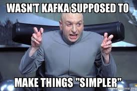
Kafka Streams
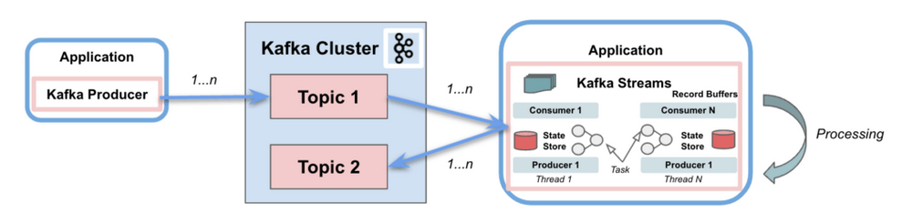
- Kafka Streams to biblioteka Javy dostarczana z Apache Kafka: filtrowanie, łączenie, agregacja i grupowanie strumieni.
- To „natywny” sposób przetwarzania danych w Kafce. Nie wymaga osobnego klastra: działa wewnątrz zwykłej aplikacji, a skaluje się przez uruchomienie kolejnych instancji (grupa konsumentów).
- Stan (np. liczniki) trzyma lokalnie w RocksDB i kopiuje do tematów w Kafce, aby odtworzyć go po awarii.
Kafka: plusy i minusy
Plusy
- bardzo duża przepustowość i opóźnienia rzędu milisekund
- trwały log: wielu niezależnych konsumentów i możliwość odtworzenia historii
- ogromny ekosystem: Kafka Connect (setki konektorów), Kafka Streams, Flink, klienci w wielu językach
- jeden system zamiast wielu integracji punkt-punkt
Minusy
- złożona konfiguracja i utrzymanie, źle skonfigurowana działa nieoptymalnie
- nie nadaje się do bezpośredniej komunikacji z małymi urządzeniami IoT (do tego MQTT)
- brak routingu wiadomości znanego z RabbitMQ. Kolejki punkt-punkt doszły dopiero w Kafce 4.2 (share groups)
MQTT, RabbitMQ czy Kafka?
| MQTT (Mosquitto, EMQX) | RabbitMQ | Apache Kafka | |
|---|---|---|---|
| Model | publish/subscribe, push | kolejki z routingiem, push | partycjonowany log, pull |
| Wiadomość po odczycie | znika (oprócz retained) | znika po potwierdzeniu | zostaje do końca retencji |
| Klienci | tysiące do milionów małych urządzeń | usługi backendowe | usługi backendowe, procesory strumieni |
| Mocna strona | lekki protokół, słabe łącza | elastyczny routing, zadania do wykonania | przepustowość, historia, odtwarzanie |
| Typowe użycie | czujnik → bramka → broker | kolejka zadań, mikroserwisy | centralna magistrala zdarzeń, analityka |
W systemie IoT często występują razem: urządzenia rozmawiają po MQTT, most przenosi dane do Kafki, a stamtąd czyta je procesor strumieni (Flink).
Podsumowanie: dwie klasy technologii
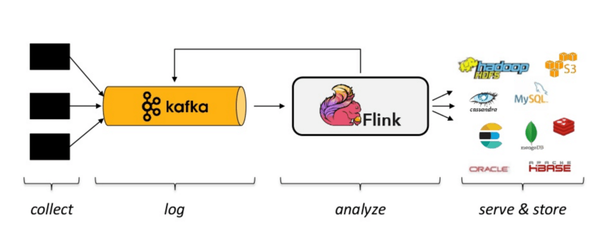
W środowisku przetwarzania strumieni zdarzeń istnieją dwie główne klasy technologii:
- system przechowujący zdarzenia (broker, log: Kafka, Kinesis),
- technologia, która pomaga pisać aplikacje działające na zdarzeniach (procesor strumieni: Flink, Spark, Kafka Streams).
Biblioteki do przetwarzania strumieniowego
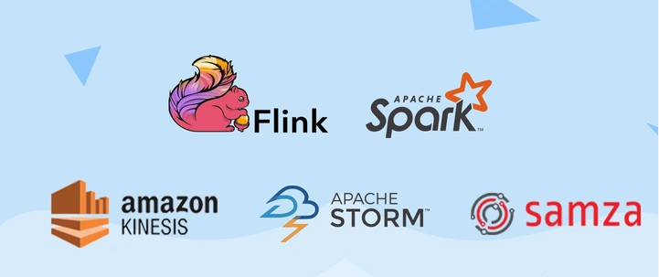
- Na slajdzie są różne rzeczy: Flink, Spark, Storm i Samza to silniki open source, a Kinesis to usługa AWS.
- Apache Samza (z LinkedIn, ściśle związana z Kafką) jest dziś rzadko używana.
- Do listy trzeba dodać Kafka Streams i Apache Beam (jedno API, różne silniki wykonawcze, m.in. Flink, Spark, Google Dataflow).
Apache Flink
- Rozproszony silnik obliczeń na nieograniczonych i ograniczonych strumieniach danych. Wsad traktuje jako szczególny przypadek strumienia.
- Przetwarza zdarzenie po zdarzeniu z opóźnieniem rzędu milisekund i dużą przepustowością.
- Stan operatorów (np. sumy w oknach) jest częścią silnika. Okresowe checkpointy pozwalają po awarii wznowić pracę bez utraty danych, z gwarancją exactly-once dla stanu.
- Obsługuje czas zdarzeń i znaczniki postępu czasu (watermarks), czyli zdarzenia spóźnione i nie po kolei.
- API: Java, Python (PyFlink) i SQL. API Scali usunięto we Flinku 2.0 (2025). Aktualna wersja: 2.x.
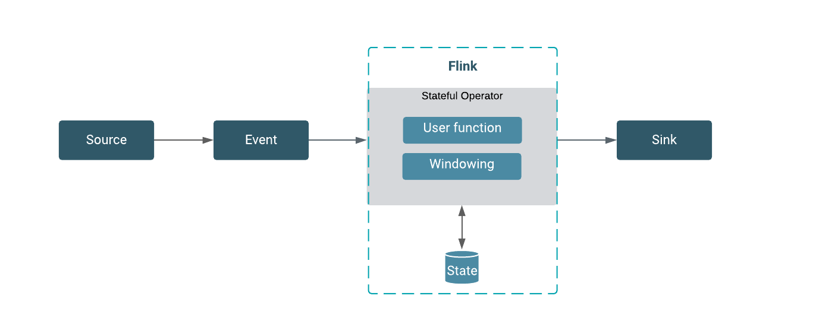
Dane wchodzą przez źródło (source), przechodzą przez operatory i wychodzą przez ujście (sink). Szczegóły na trzech wykładach o Apache Flink.
Apache Spark
- Otwarta platforma przetwarzania danych w klastrze, znana z szybkości i łatwości użycia. Trzyma dane w pamięci RAM węzłów (z możliwością zapisu na dysk).
- Jedna platforma do przetwarzania wsadowego, SQL na dużą skalę, uczenia maszynowego (MLlib) i strumieni.
- Structured Streaming przetwarza strumień w mikrowsadach (opóźnienie rzędu sekund). Spark 4.1 (XII 2025) dodał tryb real-time o opóźnieniu milisekundowym, na razie tylko dla zapytań bezstanowych.
- API: Python (PySpark), SQL, Scala, Java, R.
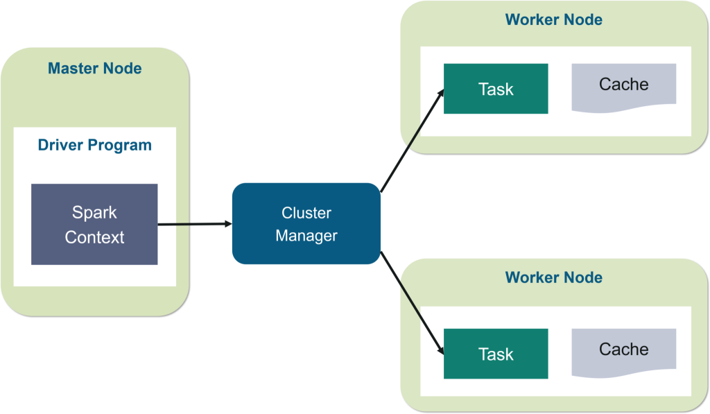
Apache Storm
- Jeden z pierwszych silników strumieniowych (BackType, potem Twitter; open source od 2011 r.). Przetwarza nieograniczone strumienie zdarzenie po zdarzeniu.
- Aplikacja to topologia: spouty (źródła) i bolty (operatory).
- Komponenty można pisać w dowolnym języku (protokół multi-lang). Silnik jest odporny na błędy i skalowalny.
- Projekt wciąż wydaje nowe wersje (2.8.x w 2026 r.), ale stracił znaczenie na rzecz Flinka. Domyślnie daje at-least-once. Stan, okna i exactly-once (warstwa Trident) dodano później i są uboższe niż we Flinku. Twitter zastąpił go w 2015 r. własnym silnikiem Heron.
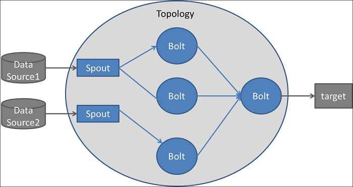
Porównanie silników
| Apache Flink | Spark Structured Streaming | Kafka Streams | Apache Storm | |
|---|---|---|---|---|
| Model | zdarzenie po zdarzeniu | mikrowsady (+ tryb real-time) | zdarzenie po zdarzeniu | zdarzenie po zdarzeniu |
| Opóźnienie | milisekundy | sekundy | milisekundy | milisekundy |
| Stan, exactly-once | tak (checkpointy) | tak | tak (w obrębie Kafki) | at-least-once, exactly-once tylko w Trident |
| Wdrożenie | własny klaster | klaster Spark | biblioteka w aplikacji | własny klaster |
| Języki | Java, Python, SQL | Python, SQL, Scala, Java, R | Java (Kotlin, Scala) | Java, dowolny (multi-lang) |
| Słabe strony | krzywa uczenia, operacje na klastrze | wyższe opóźnienie, zużycie pamięci | tylko Kafka jako źródło i cel | uboższe API stanu i okien, malejąca społeczność |
Wszystkie są odporne na awarie i skalują się poziomo. Dawne zarzuty z tabel porównawczych, np. „Flink: ograniczone wsparcie społeczności” czy „Spark: brak buforowania” (jest cache()/persist()), są nieaktualne.
Przetwarzanie strumieni w Pythonie
| Biblioteka | Do czego | Uwagi (2026) |
|---|---|---|
| Streamz | lekkie potoki strumieni w jednym procesie | wykład 9 |
| Quix Streams | aplikacje na Kafce: filtry, okna, stan, łączenia | aktywnie rozwijana, czysty Python |
| PyFlink | Python API do Apache Flink (DataStream, Table/SQL) | wymaga klastra Flinka (lub trybu lokalnego) |
| PySpark | Spark Structured Streaming z Pythona | wymaga Sparka |
| Apache Beam | jedno API, wykonanie na Flinku, Sparku lub Dataflow | Python SDK |
| Bytewax | dataflow w Pythonie z rdzeniem w Ruście | od 2025 r. rozwijany tylko przez społeczność |
| Faust | strumienie na Kafce w stylu asyncio | oryginał porzucony, fork faust-streaming mało aktywny |
Quix Streams: okno czasowe w Pythonie
from datetime import timedelta
from quixstreams import Application
from quixstreams.dataframe.windows import Mean, Max
app = Application(broker_address="localhost:9092",
consumer_group="szklarnia")
odczyty = app.topic("odczyty", value_deserializer="json")
alarmy = app.topic("alarmy", value_serializer="json")
sdf = app.dataframe(odczyty)
sdf = sdf.filter(lambda o: o["temp"] > -40) # odrzuć błędne odczyty
sdf = (sdf.tumbling_window(timedelta(minutes=1)) # okna 1-minutowe
.agg(srednia=Mean("temp"), maks=Max("temp"))
.final()) # wynik po zamknięciu okna
sdf = sdf.filter(lambda w: w["srednia"] > 30)
sdf.print(metadata=True)
sdf.to_topic(alarmy)
if __name__ == "__main__":
app.run()
{ 'value': { 'srednia': 30.666666666666668,
'maks': 33.0,
'start': 1791672180000,
'end': 1791667380000},
'key': b's1',
'timestamp': 1791672180000,
'headers': None}
- Okna liczone są osobno dla każdego klucza (czujnika), według znacznika czasu zdarzenia.
- Stan okien jest w lokalnej bazie RocksDB z kopią w Kafce.
- Zastosowane pojęcia (okna, czas zdarzeń, stan) zobaczymy we Flinku.
Sprawdź się: które narzędzie?
10 000 czujników na baterie w szklarniach przesyła odczyty przez sieć komórkową. Czym połączyć je z serwerem?
MQTT: lekki protokół dla słabych urządzeń i niestabilnych łączy. Dalej dane można przenieść do Kafki.
Chcemy po poprawieniu błędu przeliczyć ponownie zdarzenia z ostatniego tygodnia. Który broker na to pozwala?
Kafka przechowuje log przez czas retencji, więc wystarczy cofnąć offset grupy konsumentów. W klasycznej kolejce wiadomość znika po potwierdzeniu.
Potrzebujemy średniej temperatury w oknach 1-minutowych, liczonej według czasu zdarzenia, z gwarancją exactly-once dla stanu. Który silnik?
Flink ma wbudowany stan, checkpointy, czas zdarzeń i watermarks. Storm ma znacznie uboższą obsługę stanu i czasu zdarzeń (exactly-once tylko w mikrowsadowej warstwie Trident), a Firehose tylko dostarcza dane do magazynu.
Podsumowanie wykładu
- Strumień to nieograniczony ciąg zdarzeń (klucz, wartość, czas). Przetwarzanie strumieniowe daje wynik od razu, wsadowe po zebraniu danych.
- Sensory wysyłają małe, częste wiadomości przez bramki. Bajty dekodujemy (
struct), czas zapisujemy w UTC, a skala szybko rośnie do milionów zdarzeń dziennie. - Architektura: broker → procesor strumieni → magazyn → analityka. ETL może działać w sposób ciągły.
- Broker rozprzęga producentów i konsumentów: kolejka albo pub/sub, push albo pull, gwarancje at-most/at-least/exactly-once, backpressure.
- MQTT łączy urządzenia (tematy, wildcardy, QoS). Kafka to partycjonowany, trwały log z grupami konsumentów.
- Silniki: Flink (zdarzenie po zdarzeniu, stan), Spark (mikrowsady), Kafka Streams (biblioteka), Storm (historyczny). W Pythonie: Streamz, Quix Streams, PyFlink.
Laboratorium: problem zaawansowanego przetwarzania równoległego (projekt).
Następny wykład (13.01): przetwarzanie danych strumieniowych w Apache Flink, API i model danych.
Referencje
- https://www.altexsoft.com/blog/real-time-analytics/
- https://hazelcast.com/glossary/stream-processing/
- https://www.upsolver.com/blog/streaming-data-architecture-key-components
- https://www.upsolver.com/blog/comparing-apache-kafka-amazon-kinesis
- https://datacadamia.com/data/processing/stream_vs_batch
- https://www.grodan.com/
- https://www.informatica.com/se/resources/articles/what-is-etl.html
- https://luminousmen.com/post/schema-on-read-vs-schema-on-write
- https://softwareskill.pl/apache-kafka-wprowadzenie
- https://kafka.apache.org/documentation/
- https://mqtt.org/ oraz https://eclipse.dev/paho/files/paho.mqtt.python/html/migrations.html
- https://bleak.readthedocs.io/
- https://flink.apache.org/
- https://spark.apache.org/docs/latest/streaming/
- https://quix.io/docs/quix-streams/
- https://docs.aws.amazon.com/streams/latest/dev/introduction.html
- https://docs.confluent.io/kafka-clients/python/current/overview.html